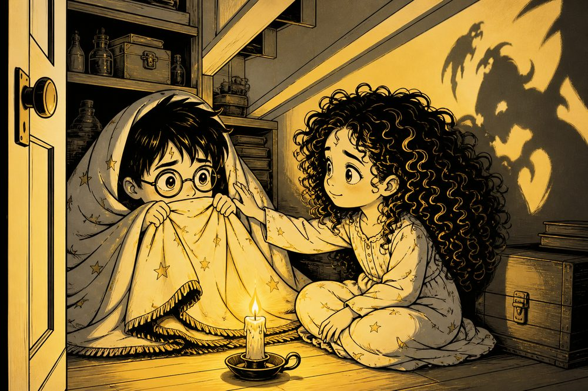
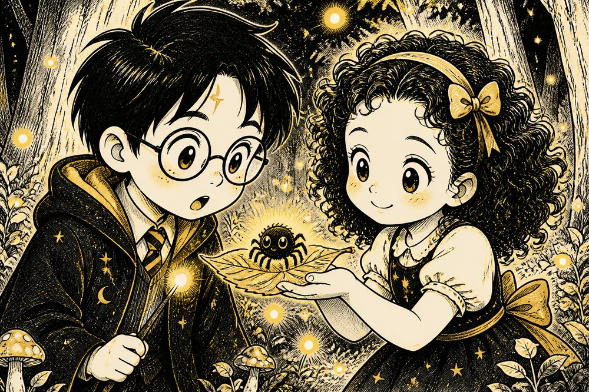
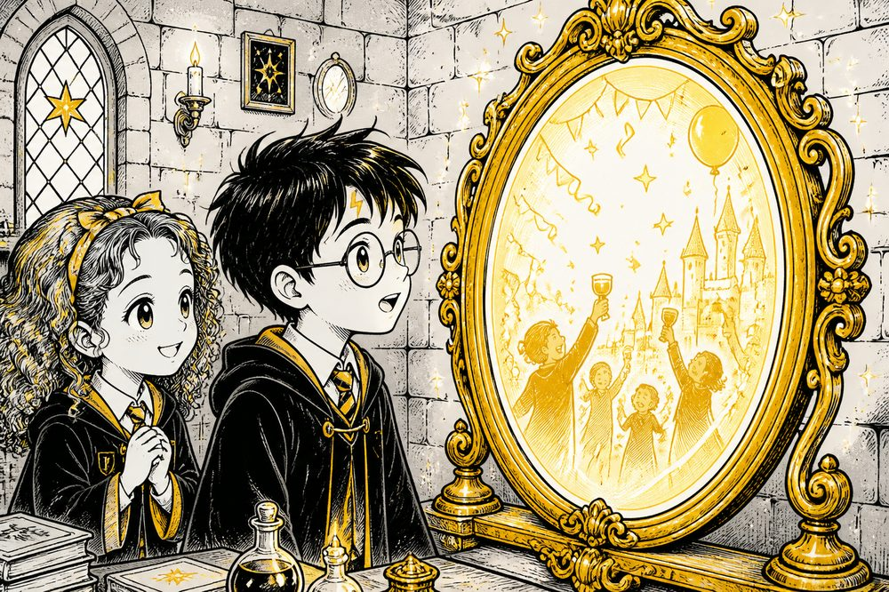

Harry Potter e a Magia da Coragem
Harry Potter tem um inimigo secreto: uma sombra sussurrante chamada Devorador de Coragem, que cresce a cada medo evitado — escuro, altura, aranhas, agulhas, trovões. A cada capítulo, ele aprende um segredo real da Psicologia com Hermione para encolhê-lo, enquanto esconde um segredo ainda maior no coração: tem certeza de que o amor dele por ela é impossível... até a página final.

Se um medo específico está deixando a sua vida pequenininha
Feito para quem evita avião, altura, dentista, falar em público, animais, agulhas ou outro gatilho claro — e quer um caminho gentil e concreto, sem aquele “é só ter coragem”.
Um vilão que engorda com o medo. Um amor que Harry jurava impossível.
Ilustrado em estilo anime, com traços finos e paleta preto, branco e dourado — cada cena do livro mostra Harry Potter enfrentando o Devorador de Coragem e, aos poucos, se aproximando de Hermione sem nunca ter certeza se o sentimento é correspondido.



Cada capítulo tem um gancho no início e uma pista no final
Escrito para prender a atenção do começo ao fim: toda abertura de capítulo já puxa você para dentro da cena, e todo final deixa uma pista do que vem a seguir — para ler "só mais um capitulozinho" (e acabar lendo o livro inteiro numa sentada só).
Cada fobia de Harry vira uma cena vivida, com o Devorador de Coragem espreitando por perto. 🌑
Uma caixinha dourada em cada capítulo traduz o conceito real de Psicologia por trás da cena. ✨
O vilão encolhe, a confissão acontece na ponte coberta de neve, e o livro termina em casamento.
O que você vai encontrar nesta história encantadora
- 0121 Capítulos Ilustrados: em estilo anime (preto, branco e dourado), contados de forma afetuosa para crianças de 5 anos (e seus pais!)
- 02O Devorador de Coragem: o pior inimigo de Harry — uma sombra que cresce a cada medo evitado e encolhe a cada medo enfrentado
- 03Ganchos em Cada Capítulo: toda abertura prende a atenção e todo final deixa uma pista do que vem a seguir
- 04O Segredo Mágico da Mente: a cada fobia, um conceito real de TCC, David H. Barlow, Wolpe, Bandura, Beck e Öst
- 05Leitura Pura e Fluida: sem folhas de tarefas ou exercícios, apenas uma historinha envolvente do início ao fim
- 06Um Amor que Parecia Impossível: Harry tem certeza de que Hermione jamais o escolheria — até a confissão na ponte de neve
- 07Final Felizes Para Sempre: casamento mágico e a certeza de que todo medo encolhe com coragem e amor
- 08Livro Digital em PDF: entrega imediata pelo WhatsApp após a confirmação do pagamento
Harry Potter e a Magia da Coragem
Livro digital ilustrado em PDF · 21 capítulos contra o Devorador de Coragem · um amor que parecia impossível até a confissão final · entrega pelo WhatsApp.
Pagamento por Pix, WhatsApp ou cartão.
Material psicoeducativo baseado em evidência. Não substitui psicoterapia, avaliação clínica nem tratamento médico. Em crise, procure ajuda profissional ou o CVV (188).